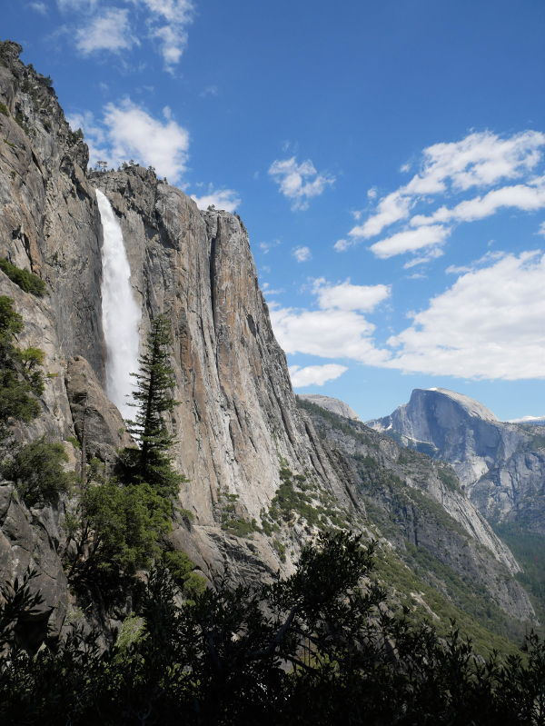
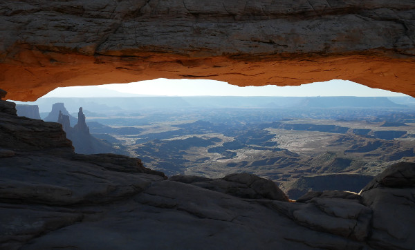
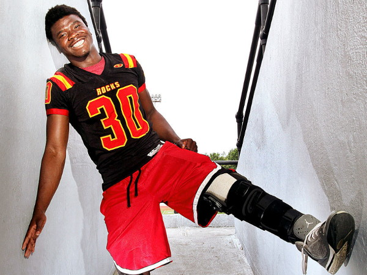
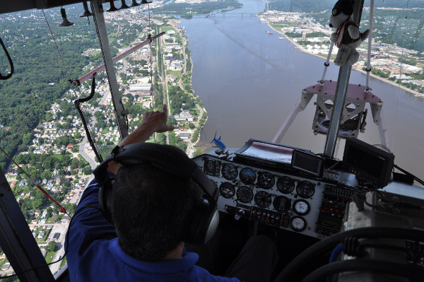

About
I'm a curious, versatile creative with a passion for developing immersive online experiences, sharing compelling stories, exploring the outdoors, and gaining a better understanding of the world. Nearly a decade in the newspaper industry sharpened my skills as a storyteller, photographer and editor. An interest in interactive storytelling has led me to pursue front-end development and UX design. I was awarded a Grow with Google Developer Scholarship in 2018 and have completed Udacity's Front-End Developer nanodegree.
Projects
Web Application
Explore Four
This application utilizes Google Maps and National Park Service Data APIs to allow users to locate and learn about NPS sites within the Four Corners region of the United States. Users have the ability to filter locations by state, designation and query.
React, HTML, CSS, JavaScript

Outdoors Website
Wander In Words
A website devoted to exploring and appreciating America's public lands. I conceptualized, designed and built this site from scratch without the use of frameworks or templates. Wander In Words is filled with my own writings, photos and videos.
HTML, CSS, JavaScript, jQuery
Website Design Concept
Grow Outside
A design concept for a fully responsive website created for a fictional nonprofit orginization dedicated to connecting kids with nature. I built a mockup for the site with Adobe XD and used my own photographs for the artwork.
HTML5, CSS3/SCSS, jQuery

Web Application
National Parks Memory Game
Also known as Concentration, this game requires a player to find matching pairs of cards until all pairs are found. The app has timing and scoring functions and randomly shuffles cards between games. Made from scratch, it contains my own national park photos.
HTML, CSS, JavaScript
Writings
Award-winning Feature
Finding a new home
Homeless on the streets of a rural Minnesota town, an orphan from Honduras was barely scraping by until the local soccer community brought him in. Won best sports story from the Minnesota Newspaper Association for 2011 for all daily newspapers.
Marshall Independent | July 30, 2011

Feature Story
The Life of Prince
After his family fled war-torn West Africa and arrived in America, Prince Gbeddeh developed a passion for his new country's most popular sport. But a freak football injury in the season opener of his senior year nearly cost him his left leg and his life.
Quad-City Times | June 6, 2015
Feature Story
Refugee Leads 'Swim Family'
Born in a refugee camp in Tanzania, Nduwikunda David became the first member of his family to learn to swim when he joined the Rock Island (Illinois) swim team as a freshman. His senior year, he received the most votes by his peers and was named a team captain.
Quad-City Times | February 10, 2016

Profile Story
Blimp pilot finds peace in open sky
Allan Judd has one of the rarest jobs in the world. It takes him away from his home for 50 weeks a year and requires he spend much of that time in a tiny gondola on the underside of a blimp. But he wouldn't trade his life in the air for anything.
Quad-City Times | August 14, 2016
Award-winning Feature
A family's will
ALS limited Mary Jo Kurka's mobility, but it didn't keep her from enjoying her son Will's memorable senior year that included a state football championship. Awarded best sports story for all daily newspapers by the Minnesota Newspaper Association for 2010.
Marshall Independent | April 15, 2010
Hit me up
Copyright © 2018 Matt Dahlseid | All Rights Reserved